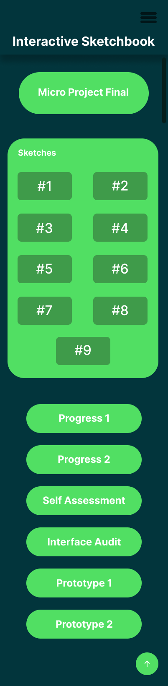
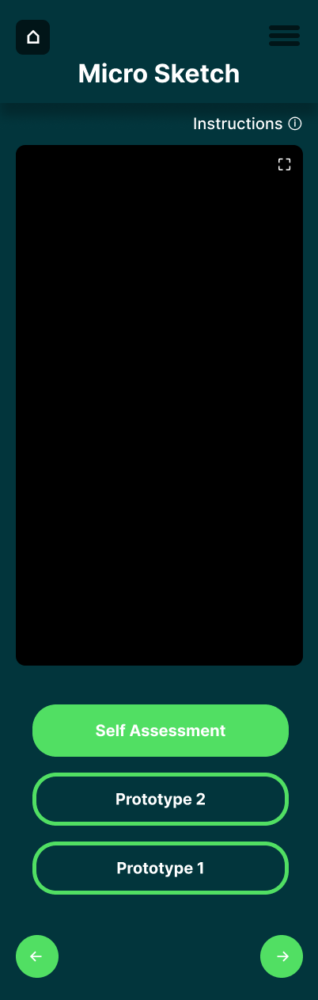
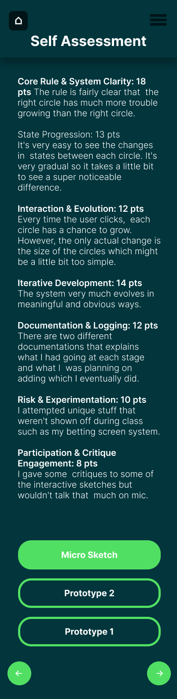
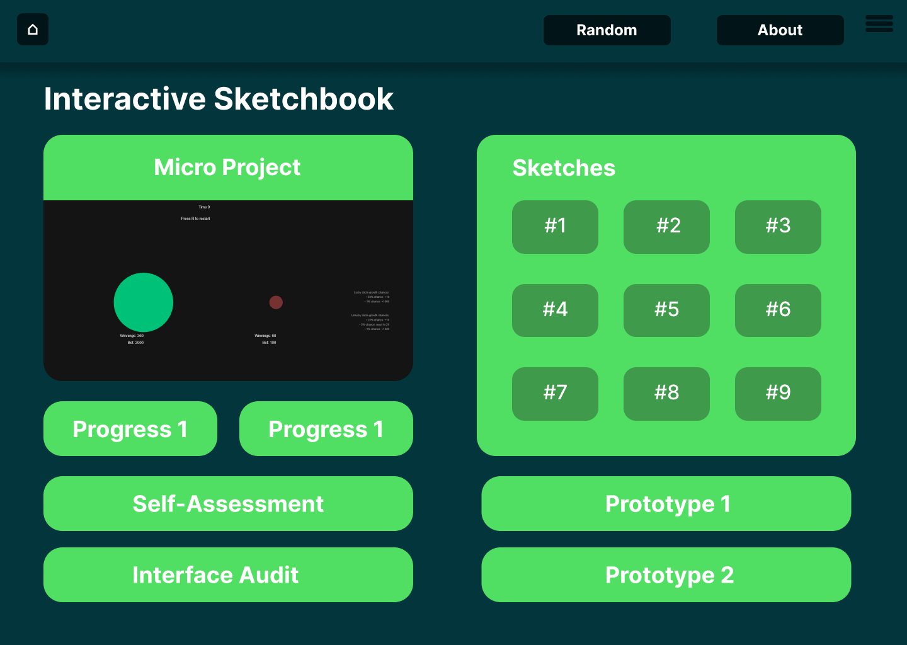
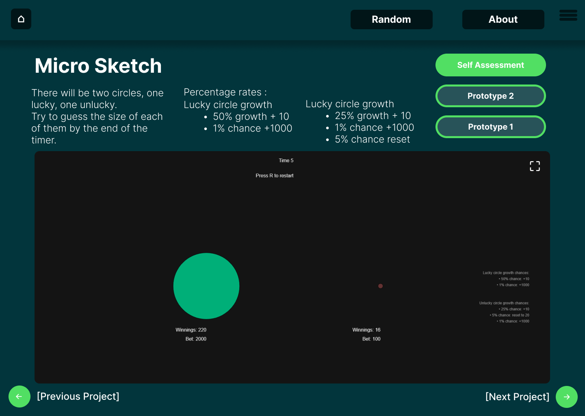
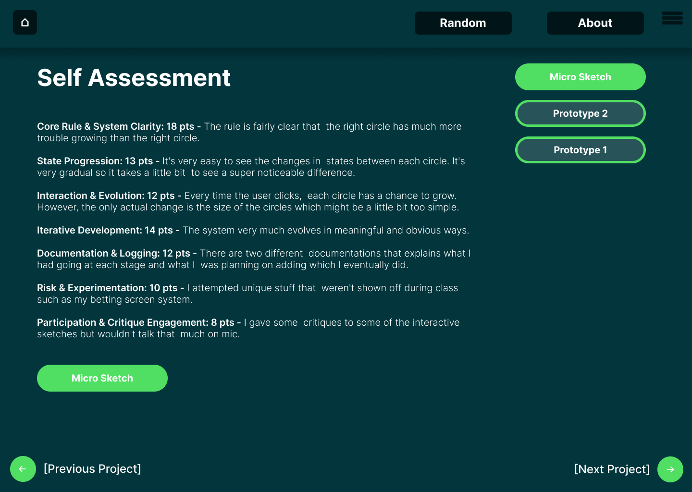

Refection: The overall website uses a fairly generic navigation model, with the interactive sketchbook page acting as the landing page/central hub. This page has a link to every individual navigation page that’s in the rest of the sketch. There is a clear hierarchy with the final micro sketch project being the biggest thing on the screen and the thing that hopefully draws in the viewer’s attention first, especially with the thumbnail in the web version. For the mobile version, I used a top-down hierarchy system, where the most important buttons would appear at the top and get slightly less important as you go further down the app page. For the web page of the micro sketch and self assessment, I put the most important button, the microsketch/self assessment respectively, in a primary green button. On the other hand, the slightly less important links, being prototype one and prototype two, were put in secondary buttons with just the green border and transparent filling. The mobile screen was a lot more simple to design compared to the desktop screen so it helped a lot designing the mobile screen first. I just put all the buttons one on top of each other with the exception of the sketch buttons which I felt could be grouped all together side by side. For the micro sketch and self assessment pages, they were also each other as I just stacked everything on top of each other, same as the main page. From then, it was fairly easy to transfer the designs to the desktop versions with some minor adjustments, like including the thumbnail in the desktop landing page. Related to Norman’s affordances and signifiers, I believe the affordances of each page are fairly clear, as the clickable buttons on each page are a much different color than the rest of the page. This also relates to the signifiers because it’s clear to see what’s possible since all the clickable buttons are a different color. The Nielsec heuristic I used the most throughout the website was rule 3: User Control and Freedom. On every page so far, I included a home button, a way to get to the other sketches, and right and left arrows to switch between pages. This way, there is always a way to go to the next/previous page, or back to home. I also took into account rule 10: Help and Documentation. For the mobile and web microsketch page, I included instructions, either at the top of the page, or once you click on a little ‘i’ icon to see more info.





